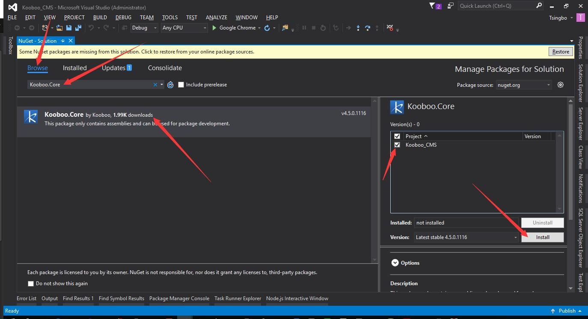

程序下载
你可以从github网站签出最新Kooboo CMS源码自行发布，或者从这里下载发布后的压缩包“Kooboo_CMS.zip”。解压压缩包以备用。
下载地址：downloads
搭建Kooboo CMS环境
搭建用作项目开发的环境
为了便于开发，这里推荐使用VisualStudio（以下简称VS）作为开发工具。使用VS打开解压后的文件夹里面的Kooboo_CMS.csproj项目。
直接点击“保存全部”（快捷键Ctrl+Shift+S）将解决方案文件保存到与解压后的Kooboo_CMS文件夹同目录。
整理下文件：
1.删除无用的文件（Kooboo_CMS.zip、manifest.xml、parameters.xml）。
2.拷贝Bin目录到sln文件同级并重命名为lib。
3.删除lib文件夹中所有以Kooboo开头跟System.Web开头的dll。
从nuget安装Kooboo.Core（Kooboo CMS Core Binaries）包
从nuget下载Kooboo.Core包，或者打开“Package Manager Console”键入 “Install-Package Kooboo.Core”进行安装。
以下两种方式二选一即可。
PM> Install-Package Kooboo.Core